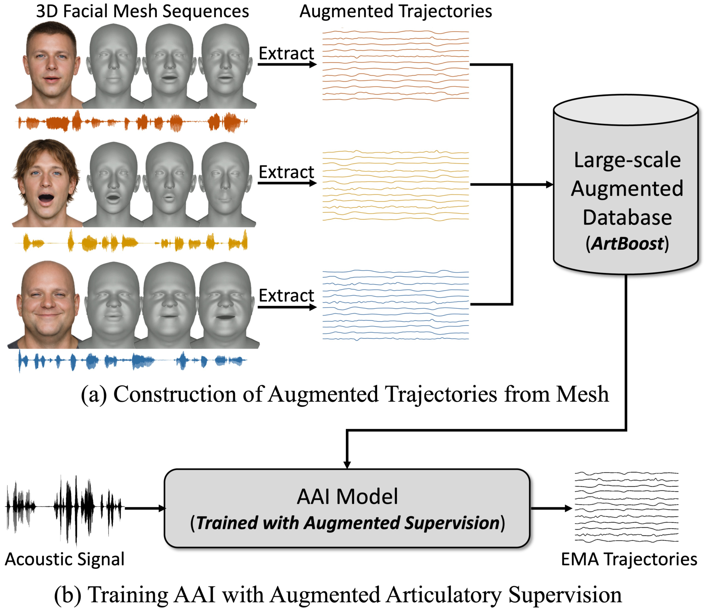
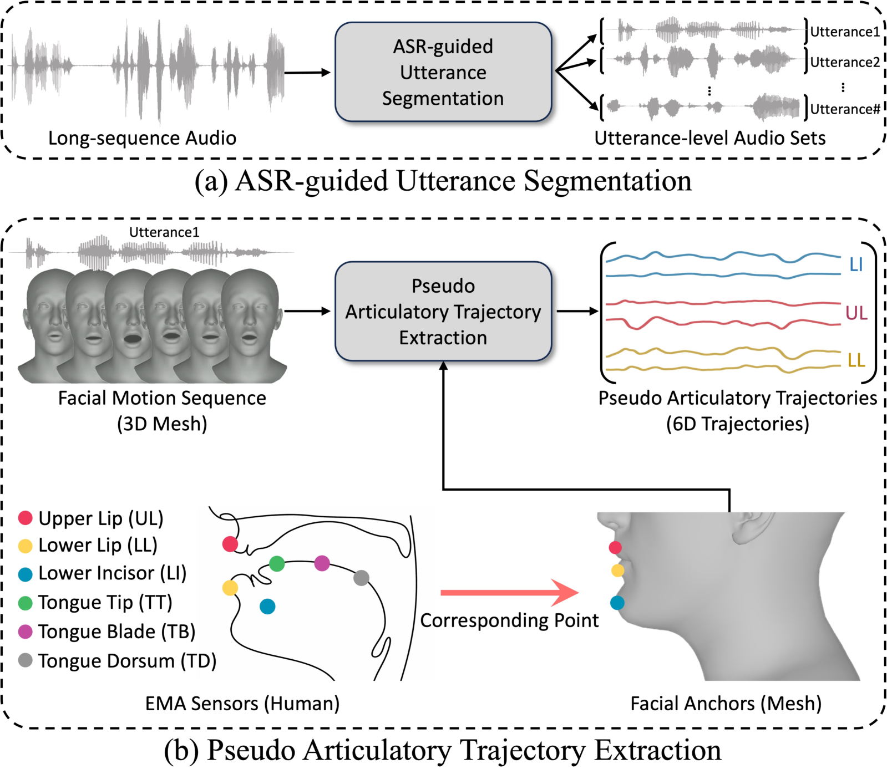
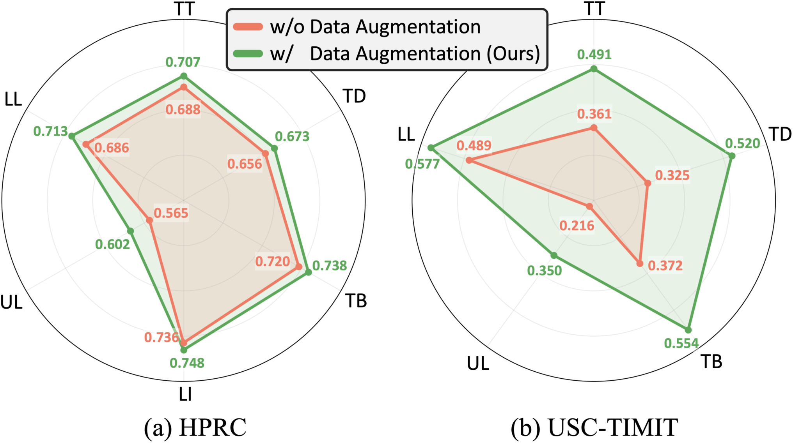
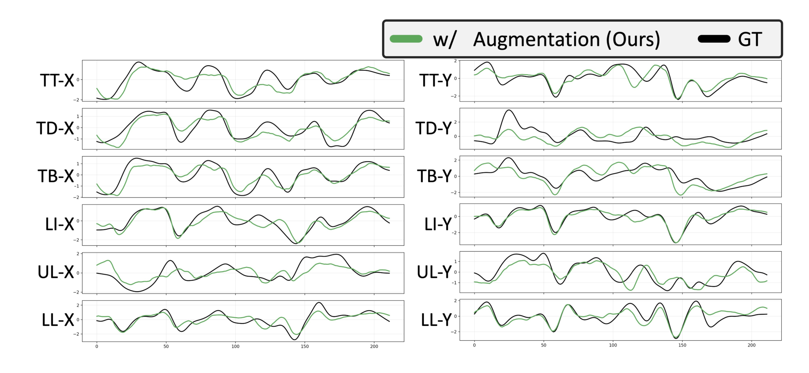
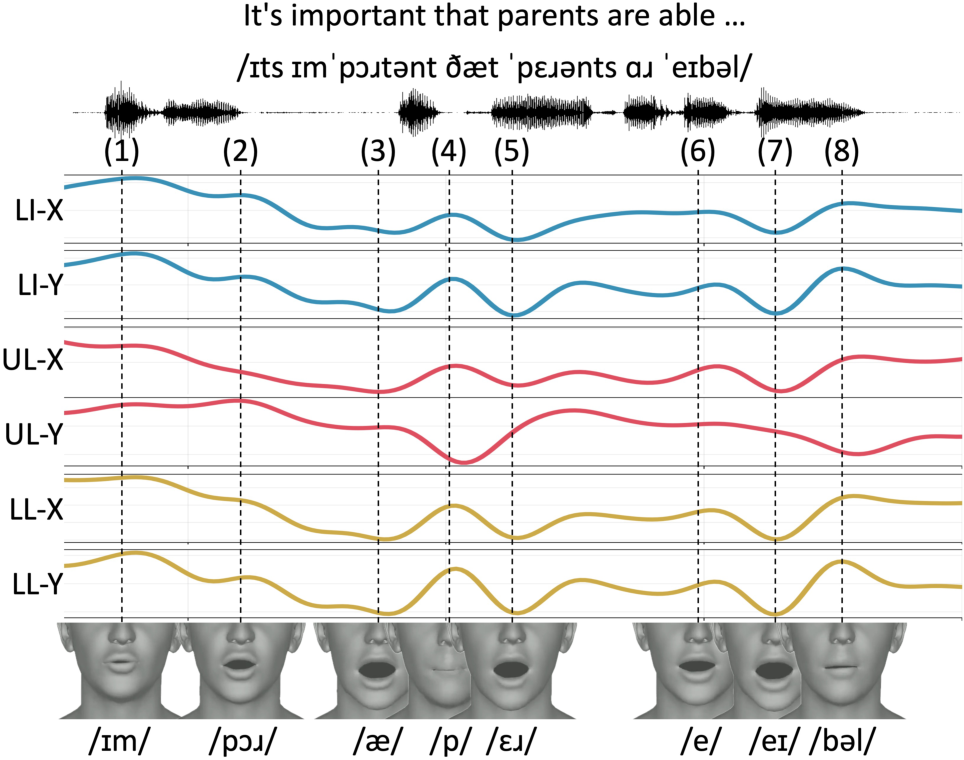

Recent acoustic-to-articulatory inversion (AAI) models rely on electromagnetic articulography (EMA) data, which are costly and limited in scale. To address this limitation, we propose ArtBoost, a novel data augmentation strategy that leverages large-scale speech–mesh datasets originally developed for speech-driven 3D facial animation to improve AAI under limited EMA supervision. ArtBoost extracts pseudo articulatory trajectories from visible facial anchors and uses them for pre-training before fine-tuning on real EMA data. Experiments show consistent improvements in PCC and RMSE. Trajectory analyses confirm that the pseudo articulatory signals reflect physically meaningful visible articulatory dynamics. Additional evaluations across different AAI architectures demonstrate stable performance gains, indicating that ArtBoost can be integrated into diverse AAI models. These results suggest that speech–mesh data provide an effective and scalable source of articulatory supervision for AAI.

ArtBoost turns abundant speech–mesh recordings into pseudo articulatory supervision through three steps, expanding the effective training space without any additional sensor-based recordings.
1) ASR-guided Utterance Segmentation. Speech–mesh datasets consist of long, continuous video-level recordings, whereas EMA corpora are organized at the utterance level. We run automatic speech recognition to obtain word-level timestamps and group consecutive words into utterance candidates — splitting when the inter-word silence exceeds a threshold or a maximum word count is reached — producing synchronized utterance-level speech–mesh pairs.
2) Pseudo Articulatory Trajectory Extraction. For each utterance clip, we track visible facial anchors corresponding to articulators — the upper lip (UL), lower lip (LL), and lower incisor (LI) — where each anchor is the mean position of a predefined vertex region to reduce mesh noise. Following the conventional EMA representation, we retain the protrusion (z) and mouth-opening (y) motion components, assemble a 12-channel target (zeroing channels without a visible anchor), and resample to the target articulatory frame rate.
3) Pre-training then Fine-tuning. We first pre-train the AAI model on the pseudo trajectories using a channel-masked loss that supervises only the visible UL/LL/LI channels. We then fine-tune on real EMA trajectories with full-channel supervision. This lets the model learn a strong prior of visible articulatory motion from large-scale pseudo data before refining it with complete ground-truth EMA signals.
Under leave-one-speaker-out (unseen-speaker) evaluation, ArtBoost augmentation consistently improves both the Pearson correlation coefficient (PCC ↑) and root mean square error (RMSE ↓) on two AAI architectures and two benchmarks. Gains are most pronounced on USC-TIMIT, where ground-truth EMA data is scarcest — indicating that ArtBoost is especially effective under limited supervision.
| Model | Dataset | PCC (↑) | RMSE (↓) | ||
|---|---|---|---|---|---|
| w/o | w/ ArtBoost | w/o | w/ ArtBoost | ||
| SSL-AAI | HPRC | 0.678 | 0.698 | 0.736 | 0.717 |
| USC-TIMIT | 0.351 | 0.510 | 0.864 | 0.792 | |
| SI-AAI | HPRC | 0.717 | 0.732 | 0.706 | 0.689 |
| USC-TIMIT | 0.488 | 0.593 | 0.917 | 0.817 | |
Overall results (mean over unseen speakers). Bold marks the better score within each model/dataset.

Articulator-wise PCC. Although pseudo trajectories are built only for the visible anchors (UL/LL/LI), ArtBoost improves prediction across multiple articulators — showing that the augmentation enhances the learned articulatory representation beyond the directly supervised channels.

We compare predicted and ground-truth EMA trajectories on HPRC. Across the protrusion (“-X”) and aperture (“-Y”) channels for multiple articulators, the predicted trajectories follow the overall temporal trends of the ground truth, capturing peak movements and transition patterns. The model produces temporally coherent and physically plausible articulatory motion consistent with expected speech dynamics.

This visualization shows how pseudo articulatory trajectories are derived from speech–mesh data and how they correspond to visible facial motion: synchronized audio, the pseudo LI/UL/LL trajectory signals, and the 3D facial mesh frames. During bilabial closure, reduced lip opening appears in the Y-direction components, while protrusion-related motion appears in the X-direction. The temporal alignment between mesh deformation and trajectory variation confirms that the mesh-derived signals encode physically interpretable articulatory dynamics — supporting their use as training targets in the absence of direct EMA measurements.
@inproceedings{kim2026artboost,
author = {Kim, Hyung Kyu and Hwang, Byungchan and Kim, Hak Gu},
title = {ArtBoost: Synthetic Articulatory Data Augmentation for Acoustic-to-Articulatory Inversion},
booktitle = {Proc. Interspeech},
year = {2026}
}